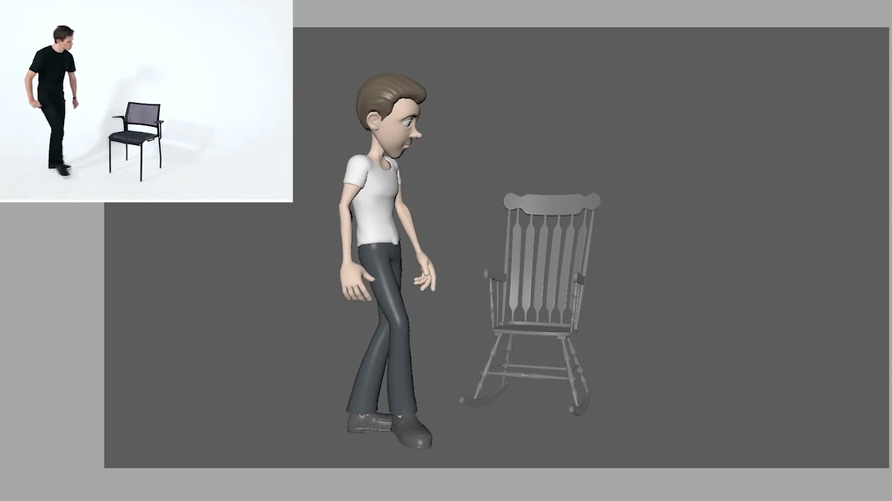

Work



3D animation, or computer animation, uses a series of computer-generated images that are shown quickly in succession and produce the illusion of movement. What is special about 3D animation is the ability to simulate real-life physics to represent volume and weight, making the object or character feel like it exists in three-dimensional space. 3D scenes can further be captured from several camera angles to more closely mimic real-world approaches to film-making. The basic process of creating a 3D animation can be divided into three major exercises: modeling, animation, and rendering. Modeling tasks include building and texturing the models and rigging the models for movement. Animation requires posing the models along keyframes to create motion, camera set up, and lighting design. Rendering is a process that generates frames between keyframes to produce continuous movement. Finally, the rendered frames are composited, and special effects, transitions, and sound are added.
TCreating 3-dimensional animations that move inside digital environments requires a combination of programming prowess and artistic skill. Good 3D animation is vital to making best-selling video games, animated movies, and television series, as well architectural renderings and prototypes.
